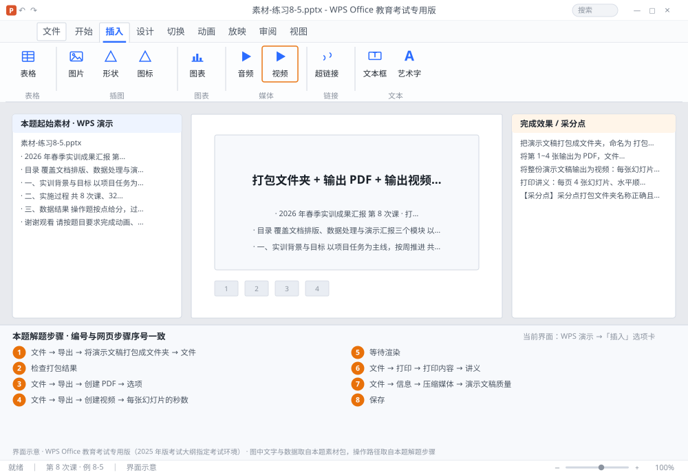

完成比对文档 · 例 8-5
打包文件夹 + 输出 PDF + 输出视频（3 秒/张）+ 讲义 4 张/页 ｜ 第 8 次课 / WPS 演示 ｜ 网页：实操-演示2.html ｜ 考试环境：WPS Office 教育考试专用版（2025 年版考试大纲指定考试环境）
用途 本页按修订后的题目要求与解题步骤生成，是交卷自查的结果基准：
逐项列出每一步应出现的可复核结果，配合模拟操作截图与解题结果文件使用。
它不是素材包的一部分，不会预置答案动作；起始素材仍从本题素材包下载。
一、本题起始素材包
目录：练习素材/练习8-5-打包与输出/ ｜
下载包：练习素材/下载/练习8-5-打包与输出.zip
二、题目要求
- 把演示文稿打包成文件夹，命名为 打包-学号，勾选「嵌入字体」与「链接的文件」。
- 将第 1~4 张输出为 PDF，文件名为 前四页.pdf。
- 将整份演示文稿输出为视频：每张幻灯片 3 秒、分辨率 1080P，文件名 演示视频.mp4。
- 打印讲义：每页 4 张幻灯片、水平顺序、A4 横向。
- 把演示文稿压缩媒体为「演示文稿质量」。
- 保存为 学号-姓名-练习8-5.pptx。
三、解题步骤（编号与下方核对表、截图编号一致）
- 打包。「文件」→「导出」→「将演示文稿打包成文件夹」（或「文件」→「打包」）→ 选择输出位置 → 文件夹名 打包-学号 → 勾选「嵌入字体」「包括链接的文件」→ 确定。
- 检查打包结果。打开生成的文件夹，应包含 .pptx、字体文件（若有）、以及媒体子文件夹。
- 输出 PDF。「文件」→「导出」→「创建 PDF」→ 在弹出的「选项」里把「发布范围」选「幻灯片 1 到 4」→ 确定 → 保存为 前四页.pdf。
- 输出视频。「文件」→「导出」→「创建视频」→ 在「每张幻灯片的秒数」填 3 → 分辨率选「全高清 1080P」→「创建视频」→ 保存为 演示视频.mp4。
- 等待渲染。视频生成需要时间（与页数、分辨率有关），期间不要关闭文件。
- 打印讲义。「文件」→「打印」→ 在「打印内容」下拉里选「讲义」→「每页幻灯片数」选 4 →「顺序」选「水平」→ 纸张 A4、方向横向 → 预览确认。
- 压缩媒体。「文件」→「信息」→「压缩媒体」→ 选「演示文稿质量」→ 等待完成。
- 保存。Ctrl+S 另存为 学号-姓名-练习8-5.pptx。
四、完成效果 / 采分点
采分点打包文件夹名称正确且含嵌入字体与链接文件 · PDF 仅含 1~4 张且文件名正确 · 视频每张 3 秒、1080P、文件名为 mp4 · 讲义为每页 4 张、水平顺序、A4 横向 · 已执行压缩媒体
五、逐项完成核对表
| 步骤 | 关键操作路径 | 应出现的结果（可复核） |
|---|
| 1 | 打包 | 「文件」、「导出」、「将演示文稿打包成文件夹」、「打包」、「嵌入字体」 |
| 2 | 检查打包结果 | 检查打包结果 |
| 3 | 输出 PDF | 「文件」、「导出」、「创建 PDF」、「选项」、「发布范围」 |
| 4 | 输出视频 | 「文件」、「导出」、「创建视频」、「每张幻灯片的秒数」、「全高清 1080P」 |
| 5 | 等待渲染 | 等待渲染 |
| 6 | 打印讲义 | 「文件」、「打印」、「打印内容」、「讲义」、「每页幻灯片数」 |
| 7 | 压缩媒体 | 「文件」、「信息」、「压缩媒体」、「演示文稿质量」 |
| 8 | 保存 | 学号-姓名-练习8-5.pptx |
六、模拟操作截图

界面示意 · WPS Office 教育考试专用版 · 橙色编号与本题解题步骤序号一致；
图中文字与数据取自本题素材包，功能入口取自本题解题步骤。
核对方法：按网页解题步骤完成并另存自己的成稿后，逐行比对本表第 3 列的
参数、公式、区域、文件名与对象数量；再对照网页「完成效果 / 采分点」检查版式是否一致。